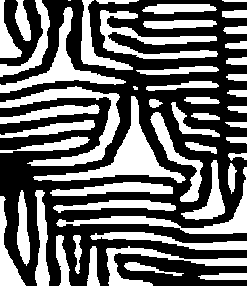

|
|||
|---|---|---|---|
| An
image such as the CHA logo can be viewed as a 2-dimensional (blue) space with white holes. The following commands show that this space has two connected components (i.e. betti number b0=2) and three 1-dimensional holes (i.e. betti number b1=3). |
|||
| gap>
A:=ReadImageFile("cha.png",500);; gap> ContractMatrix(A); true gap> C:=MatrixToChainComplex(A); Chain complex of length 2 in characteristic 0 . gap> Homology(C,0); [ 0, 0 ] gap> Homology(C,1); [ 0, 0, 0 ] |
|||
| General
homology algorithms are not the most efficient way to compute betti
numbers of image spaces as they take no advantage of the special
features of such spaces. The function
BettiNumbersOfMatrix(A) is a more efficient function. For example, this function can be used to show that the following image (borrowed from the CHOMP web pages!) 
has betti numbers b0=3
and b1=20.
|
|||
| gap>
A:=ReadImageFile("bw_image.bmp",500);; gap> BettiNumbersOfMatrix(A);StringTime(time); [ 3, 20 ] " 0:00:01.223" |
|||
| The
idea behind Topological Data Analysis is that one should be able to
gain a qualitative understanding of difficult data from its homological
properties. For example, the following commands investigate a digital photograph by calculating
the betti numbers of successive thickenings of the image. The
thickenings are intended to reduce the "noise" in the image and
to realize the image's "true" betti numbers. |
|||
| gap>
A:=ReadImageFile("digital_photo.jpg",400);; gap> for i in [1..20] do > Print(BettiNumbersOfMatrix(A),"\n"); > A:=ThickenedMatrix(A,5);; > od; [ 206, 5070 ] [ 3, 6 ] [ 3, 3 ] [ 3, 3 ] [ 3, 3 ] [ 3, 3 ] [ 3, 3 ] [ 3, 3 ] [ 3, 3 ] [ 3, 3 ] [ 3, 3 ] [ 3, 3 ] [ 3, 3 ] [ 3, 3 ] [ 3, 3 ] [ 3, 3 ] [ 3, 3 ] [ 3, 3 ] [ 3, 3 ] [ 3, 3 ] |
|||
|
{kind=link}